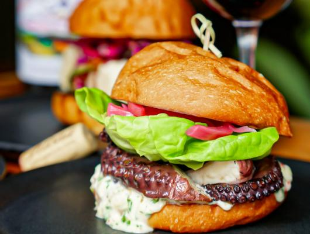

Delicious Octopus Burger With Chimichurri Aioli
Garnished with Pickled Red Onions

The Story Behind the Recipe
The Octopus Burger is an original recipe created by Pioneer Square D&E, a
neighborhood bistro located in the heart of Seattle. Best of all,
everything is made from scratch. Originally founded by seattle born
husband and wife Jonathan Flemming and Libby Aker. The well-loved local
bistro is fairly new, and opened back in Fall of 2018, an quickly rose to
popularity. Unfotunatly, similar to many other local small business - D&E
took a slight hit duing the COVID-19 pandemic and had to limit their
services. Now however, they are completely open, well recovered, and
better than ever.
About The Recipe
This simple, yet delicious seafood burger is a unique recipe that one is
able to enjoy with friends and family. Perfect for almost any ocassion,
This burger can be dined up for a more formal event due to the rich
tentacles and seafood, or even toned down for a casual lunch or dinner.
Yields: 4 burgers, 2 tenticles each
Suggested Pairing: A glass of wine
Ingredients
Pickled Red Onions
- 2 cups white vineager
- 1 cup water
- 1 cup sugar
- 1 medium size red beet diced roughly in 1 inch pieces
- 2 red onions thinly sliced
Octopus
- 1 each octopus, 3-4 pounds
- 2 head garlic
- 1 bunch scallion
- 1 nub ginger
- 1 each yellow onion
- 1 C red wine
- 2 C soy sauce
Chimichurri Oil
- 2 cups mayo
- 1/2 bunch cilantro, chopped
- 1/2 bunch parsley, chopped
- 1 shallot minced
- 5 cloves garlic minced
- 1 fresno minced optional
- 2 tbsp fish sauce
- 2 tbsp white vinegar
- 1 lemon squeezed
- 1 tbsp salt
- 1/2 tbsp sugar
Preparation
Red Pickled Onions
- Combine all liquids with oil and beats
- Pour hot liquid over sliced onions in heat proof container
- Cover and cool in the fridge for at least 6 hours
Chimichurri Aioli
- Mix all ingridients and refirigirate until ready to be used.
Octopus
-
Clean octopus over cold running water, making sure to also get tentacles
and suction cups
- Bring pot of water to a boil
- Add octopus to cook and blanch for 2-3mins
-
Once you remove the octopus from the liquid, cut the tenticles off of
the octopus
- Discard head, trim exccesive edges
-
In a new, clean pot add enough water to cover the entirety of the
octopus, aromatics, red wine, and soy
- Add in tentacle legs, cover the pot, and bring to a boil
-
Once the water has reached its boiling point, bring to a low simmer for
3-3.5 hours - ocassionally checking the tenderness until its reached
desired level.
-
Once tenitcles have braised, remove from the liquid and allow it to cool
in the fridge
-
Once tenticles have cooled, cut the tenticles and grill them at a high
heat.
-
Serve on bun of choice along with pickled onions along with chimichurri
aioli